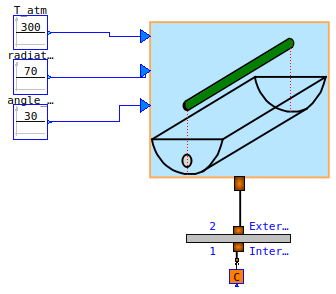
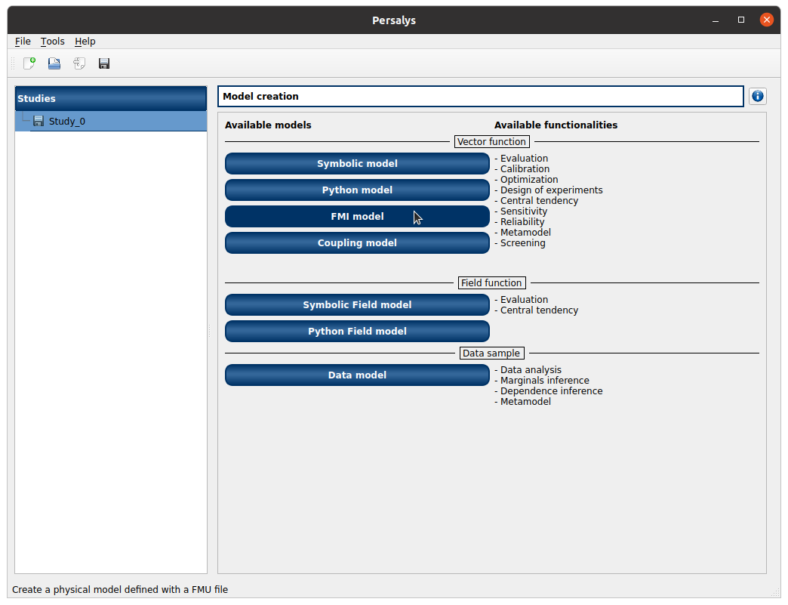
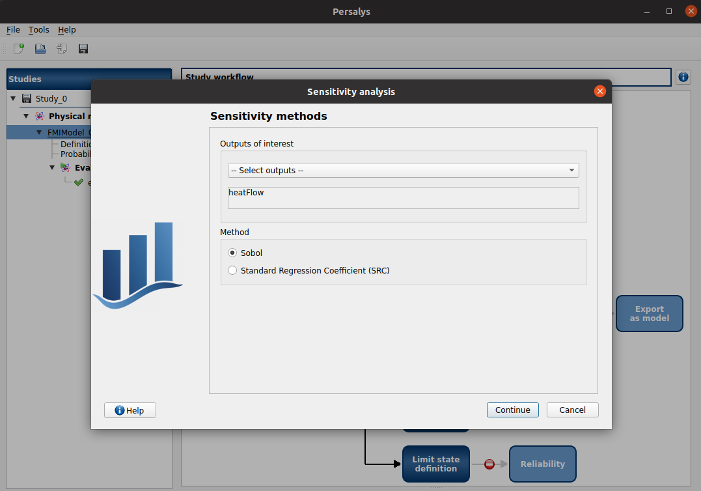
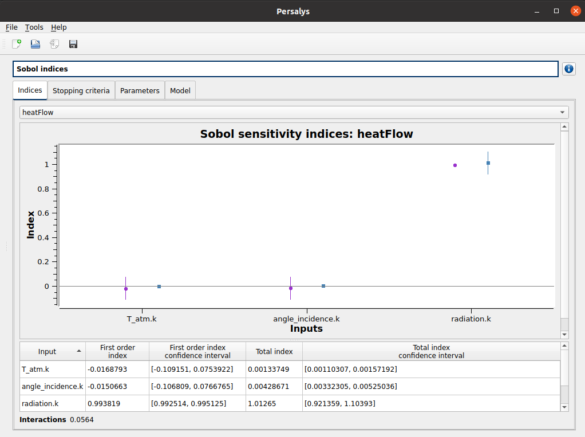

Sensitivity analysis with Persalys
Persalys is a graphical user interface to some otfmi and OpenTURNS methods. The software is free and can be downloaded here.

A parabolic solar collector concentrates the sun light on a tube via parabolic mirrors. A fluid (generally oil) circulates in this tube and heats up thanks to the reverberated sunlight.
We model this installation in Modelica using the ThermoSysPro component SolarCollector. The collector inputs (atmospheric temperature, sun radiation and sun incidence angle) are set to constant values. We collect the heat flow between the collector output and a source of constant temperature symbolizing an infinite oil flow in the tube.
This model is static, i.e. its output does not depend on time.
{kind=link}
Which input variable(s) influence the most the heat flow ?
Sobol’ first-order indices quantify the proportion of the output variance explained by an input variable. As Sobol’ first-order indices for all input variables sum to 1, they provide a ranking of the input variables. The higher the index, the more influent the input variable.
We use Persalys to compute the Sobol’ indices for the three input variables:
the atmospheric temperature T_atm.k, angle_incidence.k, radiation.k.
The solar collector model is exported under the FMI standard 2.0 (Co-Simulation format) into Solar.fmu. We first load the FMU in Persalys:
{kind=link}
To select the FMU in the files tree view, we click on the three dots at the right of the empty line. A new window opens, in which we select the FMU named Solar.fmu.
{kind=link}
Once the FMU is loaded, all its variables (inputs, outputs, local quantities, etc) are displayed. We select the variables for the sensitivity analysis:
output variable:
heatFlow,input variables:
T_atm.k,angle_incidence.k,radiation.k.

Now that the variables are set, Persalys ‘’tree of possibles’’ appears. The methods which can be used are colored in deep blue, whereas the methods with prerequisite steps appear with a forbidden pannel.
We can see that, before performing sensitivity analysis, we first have to set a probabilistic model. In other words, we have to set the probability distribution of the 3 input variables.

We consider the following laws for the input variables:
sun incidence angle: normal law
 .
It corresponds to a fixed time in the day (with the sun incidence angle varying slightly around its nominal value).
.
It corresponds to a fixed time in the day (with the sun incidence angle varying slightly around its nominal value).sun radiation: normal law truncated at 0. It corresponds to a standard sunlight, varying depending on the weather.
atmospheric temperature: normal law . It corresponds to variations depending on the season.
{kind=link}
We select the Sobol’ indices as method for sensitivity analysis. The maximal computation time must be set to 5 minutes to enable convergence.
{kind=link}
Sobol’ indices are displayed as a graph. The sun radiation is the variable with the strongest influence on the output.
{kind=link}
Keep in mind that the result relies on 2 assumptions:
the input variables are independent,
the input variables follow the probability distributions set here above.
For further exploration of the solar collector model with Persalys, see Analysis and reduction of models using Persalys. In this paper, metamodeling (aka model reduction) is performed on the solar collector. The OpenTURNS metamodel is then inserted in a solar power plant model using FMUExporter.